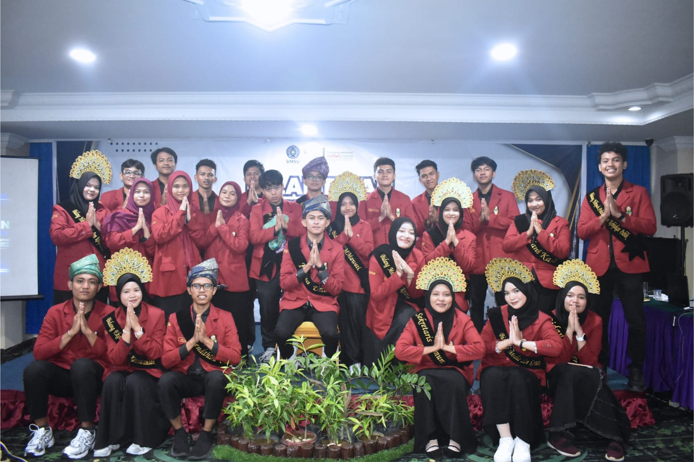
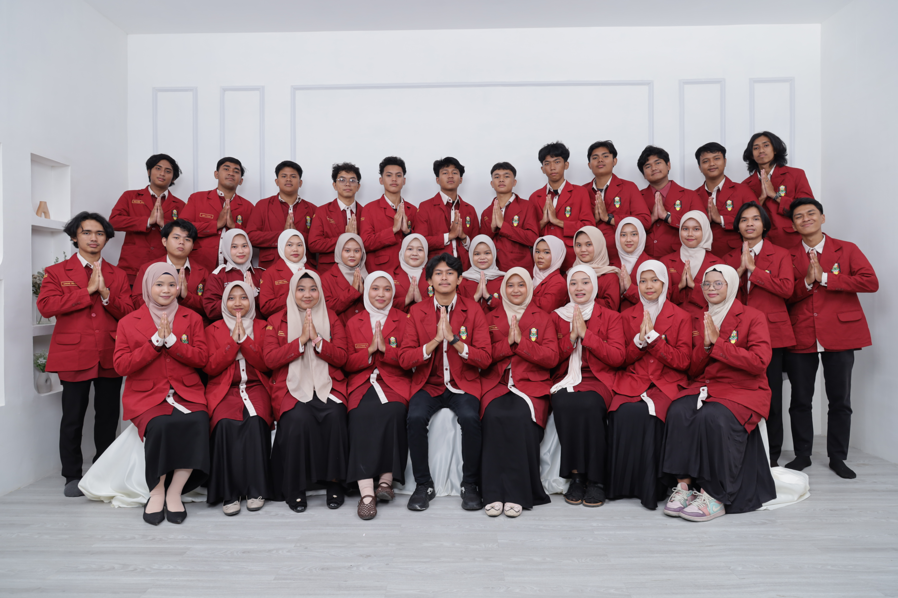
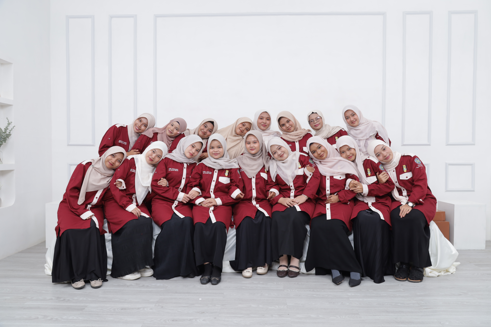
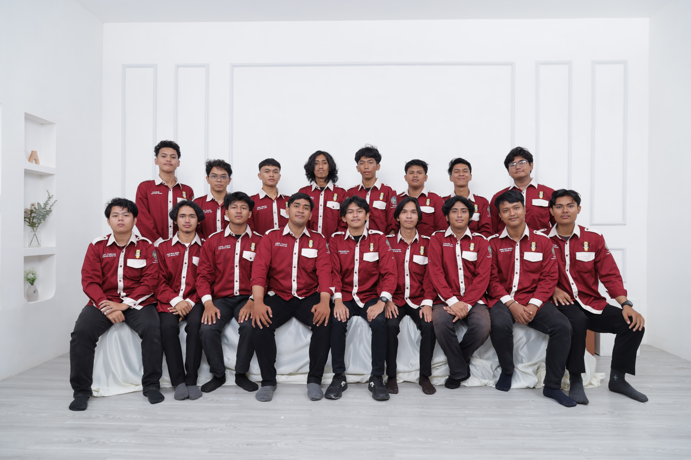
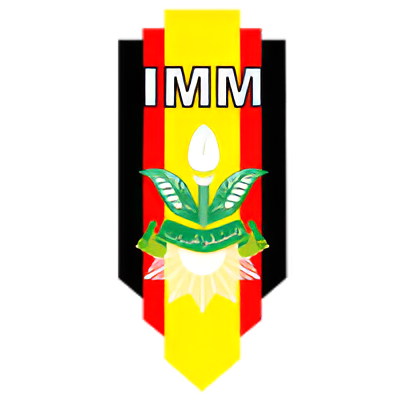

Sejarah, latar belakang, dan arah gerak PK IMM FIKTI UMSU
Ikatan Mahasiswa Muhammadiyah (IMM) adalah gerakan mahasiswa Islam sekaligus Organisasi Otonom (Ortom) di bawah naungan perserikatan Muhammadiyah yang bergerak di bidang keagamaan, kemahasiswaan, dan kemasyarakatan. Yang bertujuan mengusahakan terbentuknya akademisi Islam yang berakhlak mulia dalam rangka mencapai tujuan Muhammadiyah.
IMM secara resmi berdiri pada tanggal 29 Syawal 1383 Hijriah, atau bertepatan dengan 14 Maret 1964 Masehi di Yogyakarta. Kelahiran ikatan ini digawangi oleh tokoh-tokoh intelektual muda Muhammadiyah masa itu, di antaranya Drs. Moh. Djazman Al-Kindi yang kelak menjadi Ketua Umum Pertama IMM, M. Soedibjo Markoes, Rosyad Sholeh, dan rekan-rekan pelopor lainnya.
Lahirnya IMM di pertengahan tahun 1960-an bukanlah sebuah kebetulan, melainkan lahir dari dua desakan sejarah yang sangat mendesak. Faktor internal yaitu kebutuhan regenerasi dimana selama bertahun-tahun sebelumnya, mahasiswa-mahasiswa berlatar belakang Muhammadiyah tidak memiliki rumah sendiri di kampus. Mereka banyak yang berkiprah di HMI (Himpunan Mahasiswa Islam) atau organisasi ekstra lainnya. Semakin lama, para pimpinan Muhammadiyah menyadari bahwa perserikatan butuh dapur pengkaderan sendiri di perguruan tinggi agar ideologi dan pembaruan Kemuhammadiyahan tidak putus di generasi tua.
Kemudian faktor eksternal tepatnya pada tahun 1960-an adalah era di mana kondisi politik Indonesia sedang sangat panas. Tarik-menarik ideologi terjadi secara ekstrem di dalam kampus, terutama dengan semakin dominannya underbouw partai komunis (CGMI/PKI) yang agresif memaksakan ideologi Nasakom. IMM didirikan sebagai benteng perlawanan intelektual muda Islam untuk menyelamatkan generasi bangsa dari komunisme, sekaligus menjaga keutuhan Pancasila dan agama. Kelahiran IMM ini kemudian mendapat restu penuh dan diberkahi langsung oleh Pimpinan Pusat Muhammadiyah yang kala itu dipimpin oleh KH. Ahmad Badawi.
Pimpinan Komisariat (PK) Ikatan Mahasiswa Muhammadiyah (IMM) FIKTI UMSU adalah representasi pergerakan intelektual dan dakwah mahasiswa di lingkungan Fakultas Ilmu Komputer dan Teknologi Informasi, Universitas Muhammadiyah Sumatera Utara. Kami adalah rumah bersama bagi mahasiswa dari program studi Teknologi Informasi, Sistem Informasi, dan Sains Data untuk berhimpun, berproses, dan berkolaborasi. Di PK IMM FIKTI, ilmu teknologi diangkat menjadi jalan dakwah, sarana pengabdian masyarakat, dan instrumen inovasi sosial untuk memecahkan persoalan-persoalan nyata di tengah masyarakat.
Secara institusional, PK IMM FIKTI UMSU berfokus pada pengembangan kapasitas kader yang adaptif terhadap dinamika dan disrupsi digital. Orientasi pembinaan diarahkan pada integrasi antara pemahaman keagamaan dengan pengetahuan teknologi mutakhir. Sebagai kader yang lahir dan berkembang di era disrupsi digital, PK IMM FIKTI UMSU membangun budaya organisasi yang sangat adaptif. Kami secara aktif mewadahi para kader untuk mengasah hard skill maupun soft skill. Hal ini direalisasikan melalui ekosistem akademik yang terstruktur, meliputi forum diskusi keilmuan, pelatihan, serta pengembangan riset. Melalui sinergi antara iklim organisasi dan capaian akademis, PK IMM FIKTI UMSU berkomitmen mencetak sumber daya manusia yang komprehensif. Capaian akhir dari proses kaderisasi ini adalah lahirnya kader muslim yang tidak hanya menguasai kompetensi teknis (hard skills) secara profesional, tetapi juga berlandaskan pada integritas moral dan etika akademik yang kokoh.




Enam pilar utama yang menjadi landasan gerak dan pembentukan karakter setiap kader Ikatan Mahasiswa Muhammadiyah.
Menjadikan nilai-nilai ajaran Islam sebagai landasan utama dan nafas dalam setiap pergerakan.
Mengedepankan tradisi intelektual, keilmuan, dan nalar kritis sebagai insan akademis.
Hadir membawa manfaat dan solusi nyata bagi persoalan sosial di tengah masyarakat.
Membentuk kader yang memiliki kesalehan spiritual dan ketaatan penuh kepada Allah SWT.
Mencetak kader yang cerdas, berwawasan luas, progresif, dan haus akan ilmu pengetahuan.
Menumbuhkan kader yang memiliki kepedulian tinggi, empati, dan nilai memanusiakan manusia.

Melambangkan orang yang menuntut ilmu.
Melambangkan Iman, Islam dan Ikhsan atau Iman, Ilmu dan Amal.
Melambangkan Kekuatan, ketabahan, dan keabadian.
Melambangkan Kemuliaan tujuan.
Melambangkan Keberanian dalam berfikir, berbuat dan bertanggung jawab.
Melambangkan Kesejahteraan.
Melambangkan Kesucian.
Lambang Muhammadiyah.
Melambangkan IMM sebagai kader muda Muhammadiyah.
Fastabiqul Khairat (berlomba-lomba dalam kebajikan).
Singkatan dari Ikatan Mahasiswa Muhammadiyah.
Menyeimbangkan ilmu pengetahuan teknologi dengan nilai-nilai keislaman untuk mencetak kader yang intelektual dan religius.
Bergabung dengan jaringan mahasiswa Muhammadiyah seluruh Indonesia yang membuka peluang kolaborasi di masa depan.
Melatih jiwa kepemimpinan, public speaking, dan manajemen organisasi yang jarang didapatkan di dalam kelas perkuliahan.
Menemukan lingkungan pertemanan yang positif, saling mendukung, dan solid dalam bingkai ikatan persaudaraan.